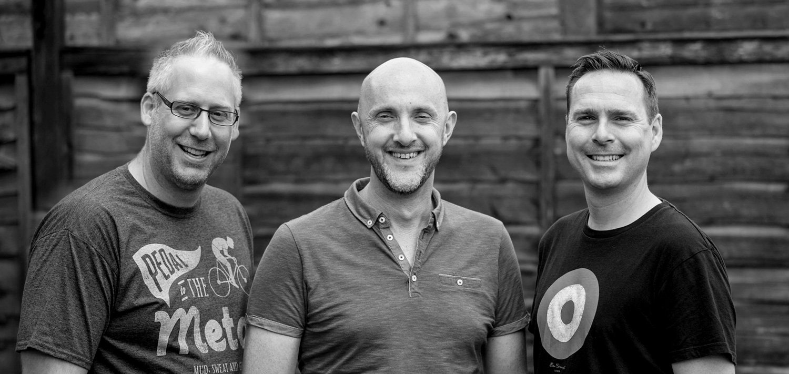

About us
The Stolians are a three-piece covers band based in Herts & Essex. We’re all originally from Bristol, hence the name ‘Stolians!.
We play lively pop and rock covers from the last 30 years from the likes of The Stereophonics, Crowded House, Ocean Colour Scene, The Foo Fighters, The Killers, and many more. We can play quietly and in smaller venues if required – but our use of plenty of vocal harmonies, bass guitar & backing tracks give us a big sound when needed. Our performances and song choices are energetic enough to get people singing along and dancing. Please feel free to get in touch with us either through email or Facebook for bookings, or to ask us any questions.